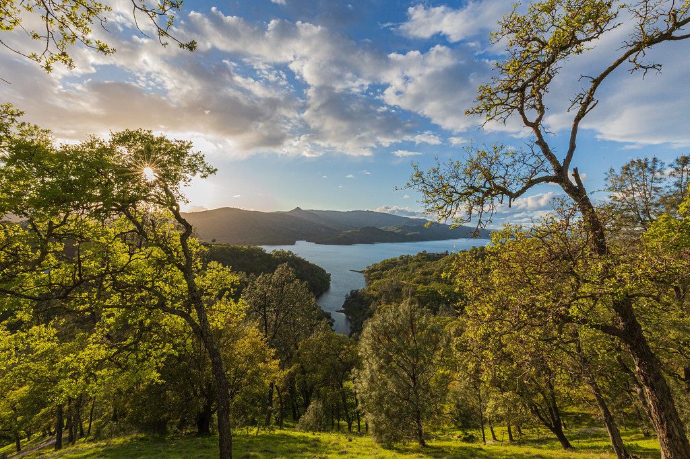

Photography
Nature and landscape gallery.
Photography is a core creative practice for me. This featured carousel highlights landscape and wildlife images from my field and travel work.

Photography
Photography is a core creative practice for me. This featured carousel highlights landscape and wildlife images from my field and travel work.
